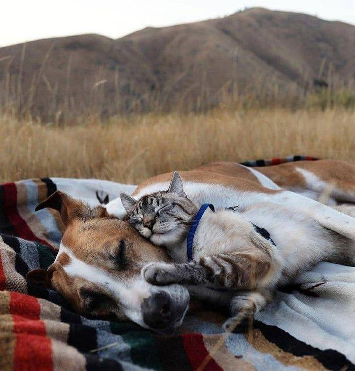

Заводячи чотирилапих вихованців, ми розуміємо, що будемо віддавати їм частину своєї душі, не кажучи вже про час і засоби. Адже догляд за домашніми тваринами складається, в тому числі, і з витрат на їх утримання. Але насправді людина від такого хобі більше отримує, ніж вкладає. Хоча любов не вимірюється ніякими мірками.
Психологія людини виділяє її з тваринного світу саме здатністю проявляти любов і турботу. Ми беремо тварин в будинок, в сім'ю, в серце, а потім разом з ними старіємо. Ніхто не знає, коли подібний факт трапився вперше. Історія говорить, що це було близько 27 тисяч років тому. Але сьогодні, навіть не усвідомлюючи, чому, ми любимо домашніх тварин і піклуємося про них.

Сьогодні вже точно відомо безліч причин, чому потрібно заводити домашніх тварин. Так, вони розвивають в дитині емоційний інтелект, уміння відчувати і проявляти емпатію, піклуватися про іншу живу істоту. У лікуванні багатьох неврологічних захворювань, психічних і інтелектуальних розладів використовується лікування через спілкування з тваринами. Дитина більш розкута і довірлива, якщо в будинку є чотирилапий вихованець.
Людина, як істота соціальна, потребує присутності поруч спорідненої душі. Часто саме домашній вихованець стає таким другом. Поруч з ним людина відчуває більше впевненості в собі, стає більш вимогливою по відношенню про самої себе. Разом з самооцінкою зростає і її імунітет, тому вона рідше хворіє, принаймні, на інфекційні захворювання. Навіть люди похилого віку, не маючи сил встати з ліжка, піднімаються, щоб погодувати свого безпорадного вихованця.
Рейтинг домашніх улюбленців за рівнем їхньої любові до хазяїв:
Собаки – безмежно обожнюють;
Папуги – любов на межі ненависті;
Пацюки – довіряють своїм хазяям;
Коти – дуже суперечливі створіння;
Тхори – люблять активні ігри з хазяїном;
Хом’яки – не сильно прив’язуються, але краще проведуть час з хазяїном, ніж з кимось стороннім;
Смугасті папуги – люблять хазяїна, як старого приятеля;
Кролики, морські свинки та шиншили – гарно ладнають з людьми, але віддають перевагу своїм пухнастим друзям;
Змії – вміють відрізняти чужинців від хазяїна, здатні приймати ласку, але їм треба багато часу, щоб почати довіряти;
Ігуани та інші ящірки – їм просто байдуже;
Черепахи – жодних емоцій до хазяїв;
Рибки – їх можна дресирувати, але тісний зв’язок між ними і хазяїном не виникне;
Павуки – уникають соціальних зв’язків.
Топ 10 "Котячих" Країн
Місця
Країни
Загaльна кількість котів
Кількість котів на 100 осіб
1
США
76,5 млн
24
2
Китай
53 млн
3
3
Бразілія
12,5 млн
6
4
Франція
9,5 млн
14
5
Ітфлія
9,5 млн
15
6
Велика Британія
7,75 млн
12
7
Німеччина
7,75 млн
9
8
Україна
7,5 млн
17
9
Японія
7,25 млн
5
10
Польща
6,75 млн
8
Історія моїх улюбленців
Все своє життя я мріяла про собаку, але коли я була ще дитиною батьки не дозволяли мені заводити чотирилапого друга. І ось через роки, мені чоловік купив собаку породи Йоркширський тер'єр і назвали її Льоля. Не дивлячись на її маленький розмір це дуже хоробрий песик, відданий і грайливий. Ми дуже швидко і сильно її полюбили, вона стала нам членом сім'ї. Через кілька років я вирішила, що не погано було б завести ще одного песика. Але купувати у чужих людей я не хотіла, і тоді наша Льоля пішла на побачення до хлопчика. І через 62 дні, як це буває у собачок, в неї народилося 3 цуценят. Після чого одного цуценя ми залишили собі і назвали її Соня, а решту подарували друзям. І тепер я господиня двох найпрекрасніших собачок.